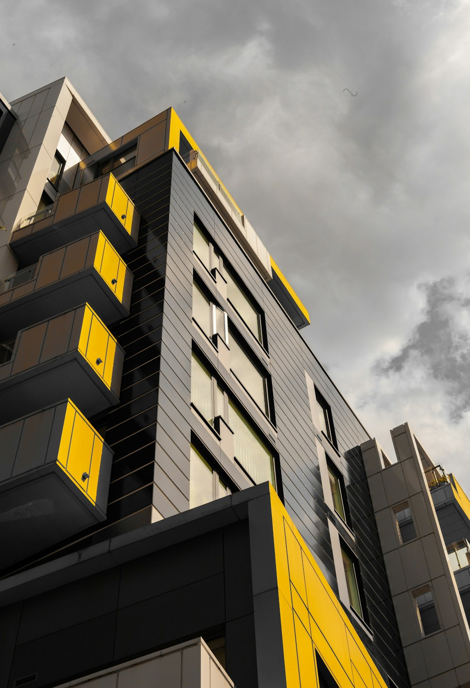

17 años
Tijuana, Baja California, México
Curiosidad por las máquinas y los retos

¿Quién soy?
Soy Alejandro Reyes Ayala, tengo 17 años y vivo en Tijuana, Baja California. Soy un estudiante que disfruta aprender de manera práctica. Me gusta entender cómo se arman las cosas, buscar soluciones cuando algo falla y compartir actividades con personas que tienen intereses parecidos.
Mi vida cotidiana gira alrededor de la escuela, mi familia y mis amigos. Intento cumplir con mis responsabilidades y dedicar tiempo al ejercicio. No tengo todo mi futuro resuelto, pero sé que quiero seguir aprendiendo y prepararme para tener un trabajo que me permita desarrollar mis habilidades.
Lo que valoro de las personas
Me describo como alguien sociable, directo y con iniciativa. Cuando hacemos un proyecto en equipo suelo proponer cómo repartir las actividades y empezar por lo más sencillo. También estoy aprendiendo a escuchar con más paciencia para que todos puedan participar.
Valoro la honestidad y el esfuerzo. Me gusta reconocer cuando no sé algo y pedir ayuda antes de quedarme detenido. Una de mis metas personales es ser más constante: prefiero avanzar poco a poco todos los días en lugar de querer terminar todo en una sola tarde.
Deporte, proyectos y convivencia
Ejercicio y deporte
Me gusta correr, hacer rutinas sencillas de condición física y jugar partidos amistosos de fútbol. El ejercicio me ayuda a despejarme después de la escuela y a mantener una rutina.
Proyectos mecánicos
Disfruto observar cómo funcionan herramientas, bicicletas y pequeños aparatos. Practico con materiales escolares y proyectos seguros para comprender conceptos de movimiento, energía y electricidad.
Música y videojuegos
Escucho música en mis ratos libres y juego videojuegos de estrategia con amigos. Lo que más disfruto es tener que planear, coordinar acciones y aprender de los errores de una partida.
Lo que me gusta de vivir aquí
De Tijuana me gusta que conviven distintos estilos de comida, música y formas de hablar. En una salida de fin de semana puedo conocer un lugar nuevo, caminar por una zona comercial o reunirme con amigos para practicar algún deporte.
También veo problemas que me gustaría ayudar a resolver, como la basura en algunos espacios y el poco cuidado de ciertas áreas comunes. Pienso que los jóvenes podemos colaborar con acciones sencillas: organizar una limpieza, respetar los lugares públicos y proponer actividades para nuestra comunidad.